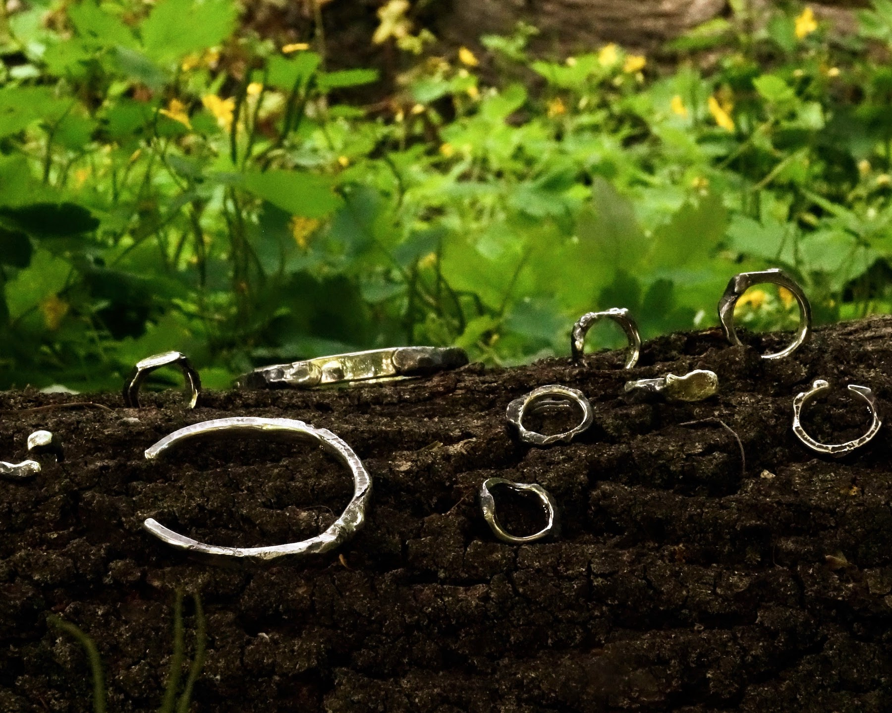
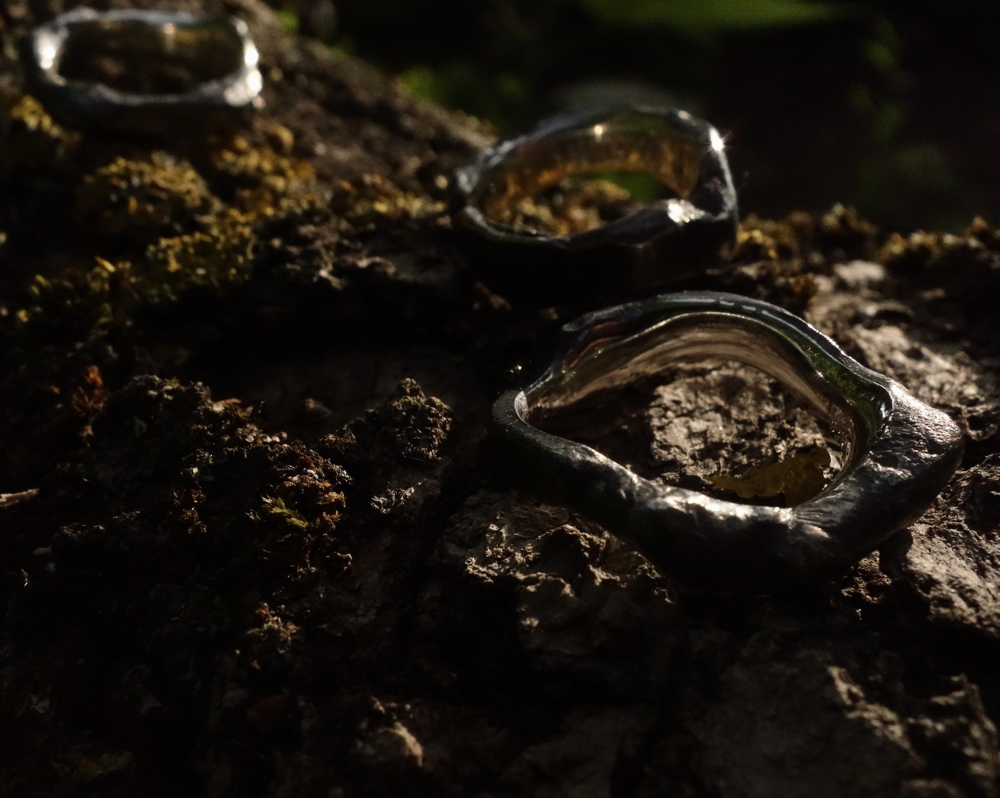
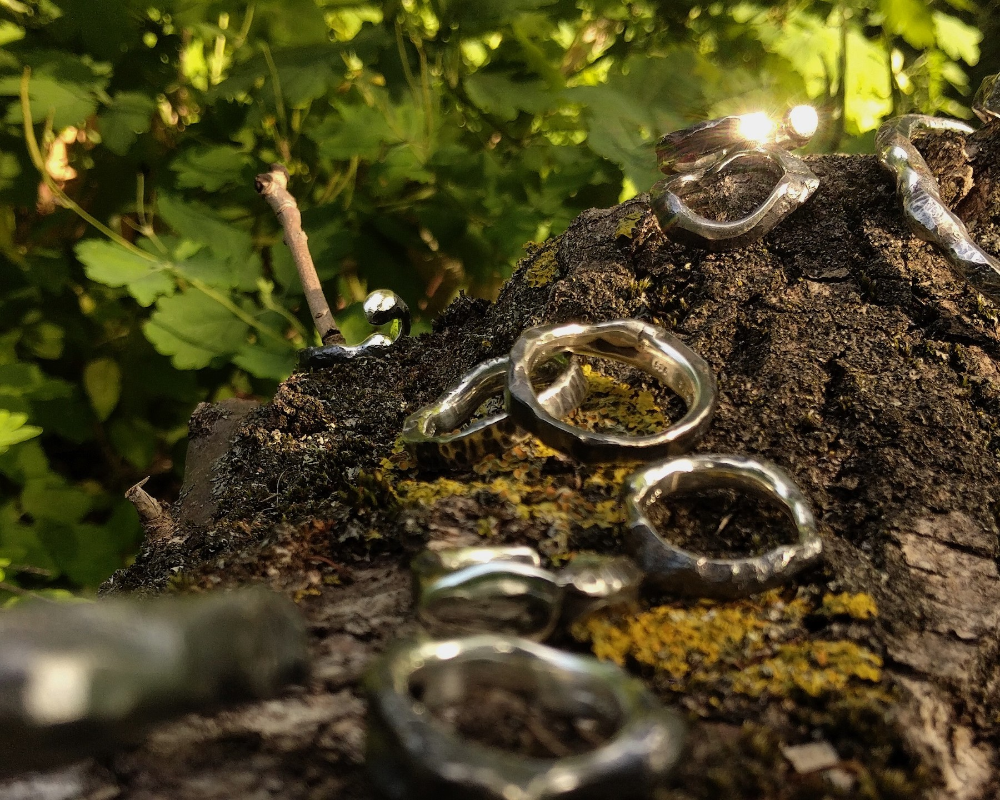
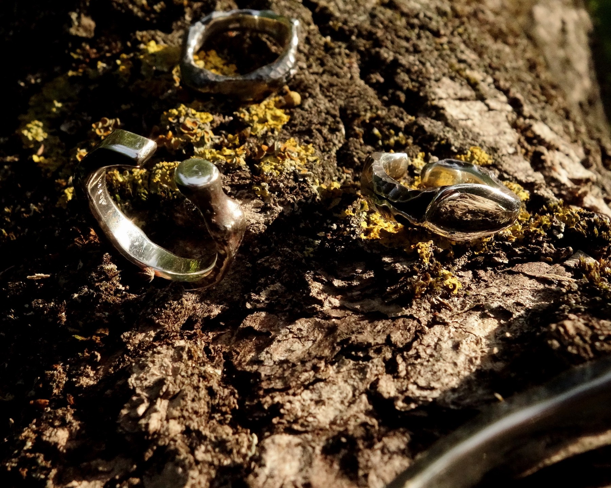
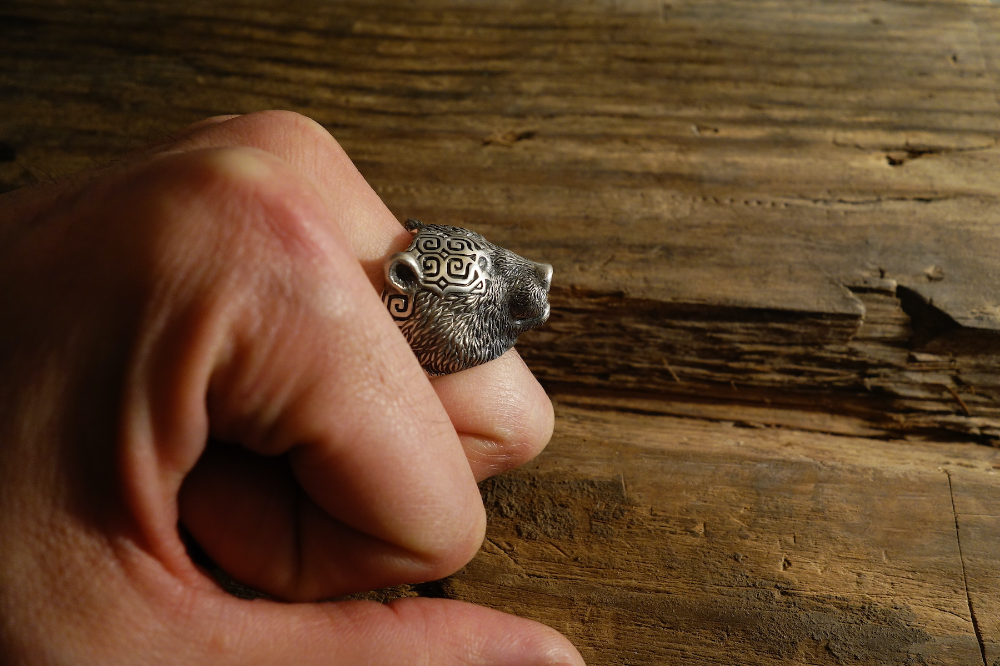

“Erde” means both “soil” and “Earth” as our planet. As a Japanese person, I believe I perceive the power of the land in a more visceral, embodied way than many people in Europe. In my home country, natural disasters like earthquakes and volcanic eruptions are part of daily life — I have often witnessed their destructive energy firsthand. This “ERDE” series is not simply about earthy textures or rough decoration. It expresses traces of transformation through hammering and marks formed by exposure to intense heat — manifestations of an “invisible energy” within the material. Through this work, I seek to explore the “true nature” of silver as a material, while also searching for a form of expression that is uniquely mine. We are constantly supported by these unseen energies — forces that shape our lives, even though we rarely notice them.
ERDE








AINU




garten